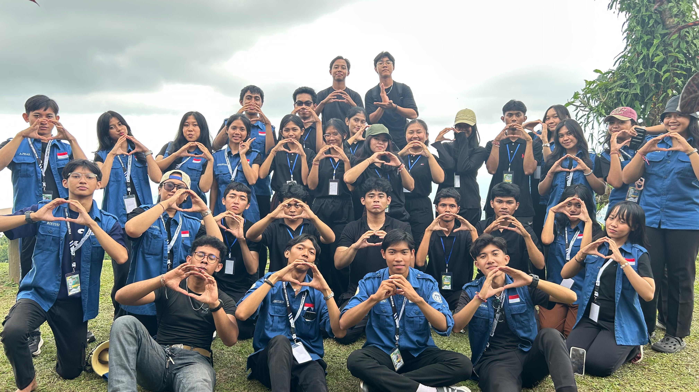
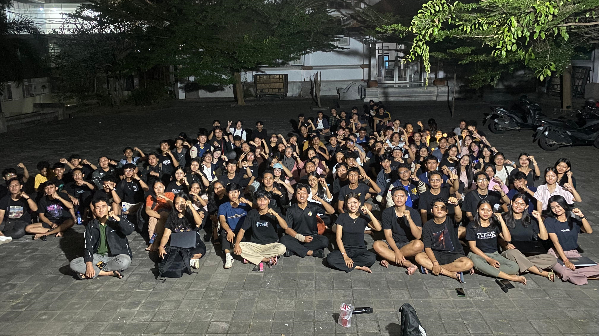
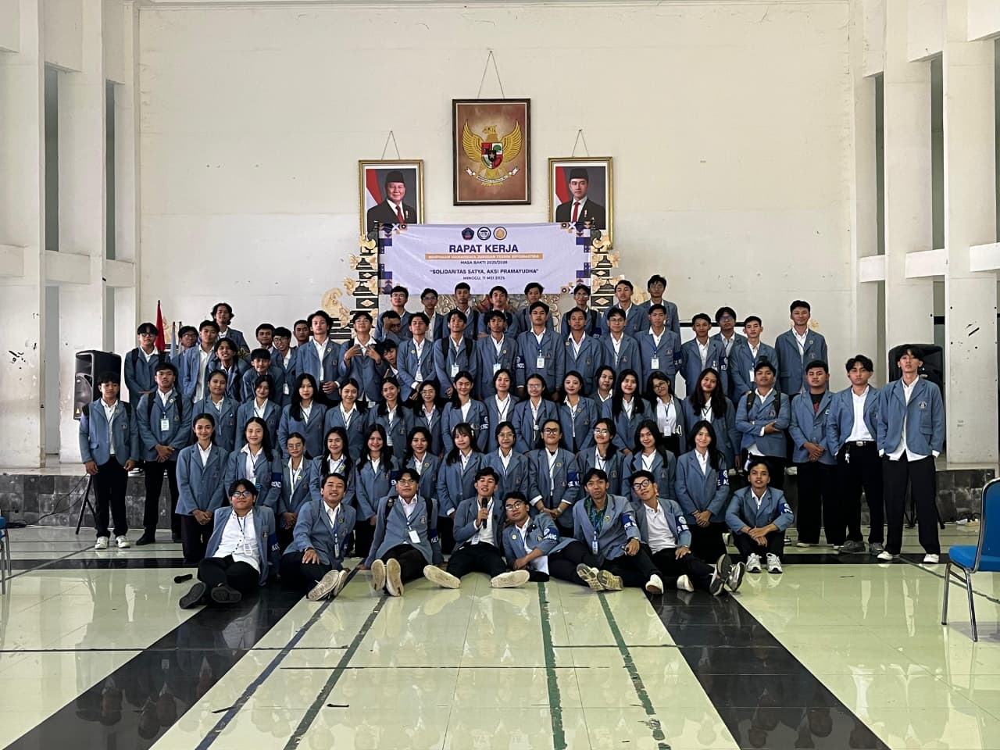

Himpunan Mahasiswa Jurusan Teknik Informatika 25/26
Kegiatan dan pengalaman berorganisasi di lingkungan kampus

OKJ 2025
Orientasi Kehidupan Jurusan Teknik Informatika Mahasiswa Baru 2025

IT EDUCARE 2025
Menjadi panitia dalam kegiatan IT EDUCARE 2025 program kerja Bidang 4.

IT CAMP 2025
Kegiatan IT CAMP tahunan fungsionaris HMJ TI 25/26.

TI PEDULI ALAM
Menjadi panitia dalam kegiatan TI PEDULI ALAM 2025 program kerja Bidang 4.

RAPAT UMUM 1 RAKSAKA
Rapat Umum 1 Raksaka

RAPAT KERJA HMJ TI 25/26
Rapat Kerja pertama HMJ TI 25/26